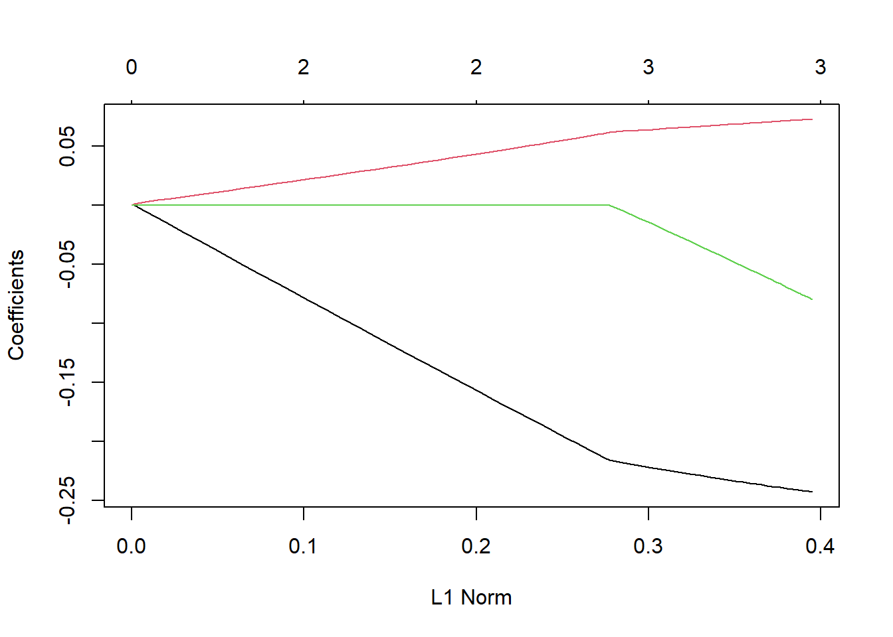
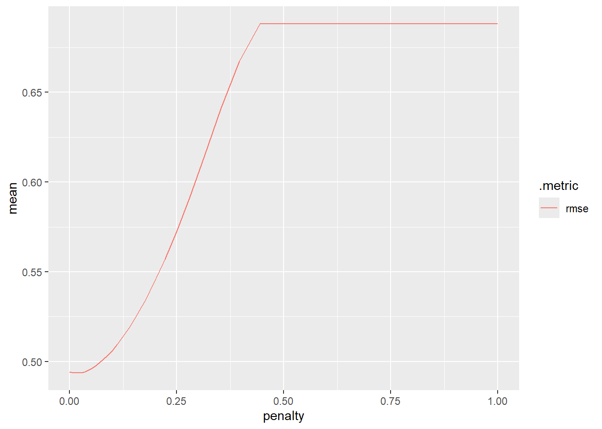

library(tidyverse)
library(tidymodels)
set.seed(10)
bike_data <- read_csv("https://www4.stat.ncsu.edu/~online/datasets/bikeDetails.csv")
bike_data <- bike_data |>
mutate(log_selling_price = log(selling_price),
log_km_driven = log(km_driven),
owners = ifelse(owner == "1st owner", "single", "multiple")) |>
select(log_km_driven, log_selling_price, everything())
#use tidymodel functions for splitting the data
bike_split <- initial_split(bike_data, prop = 0.7)
bike_train <- training(bike_split)
bike_test <- testing(bike_split)LASSO Models
We’ve seen that using a training/test split can give us a way to judge our model’s effectiveness on data it wasn’t trained on.
Alternatively, we’ve seen that cross-validation can be used to judge our model’s effectiveness without doing the training/test split. We might do this if we have a smaller data set.
A third option is to use both CV and a training/test split. We might do this if we had a number of different classes or families of models we were fitting. We could use CV to choose the best from each family solely on the training data. Then we could compare only the best models from each class on the test set.
For instance, we might have the following families of models:
- MLR models (say some with interactions, some without)
- A LASSO model (type of MLR model with penalization)
- A random forest model (studied later)
- A kNN (k nearest neighbor) model (we won’t study this one)
The latter three model types all have tuning parameters that must be selected when fitting the model. CV on the training set is often used to select those tuning parameters! We can also use CV on the training set to determine the best MLR model (or use some other model selection technique).
Using this process, we would get a best model of each type (or family) using the training set only. Then we can compare the best model from each family of models on the test set to select an overall best model!
Let’s introduce the LASSO model and then use both CV (on the training set) to select the tuning parameter. We’ll similarly compare some competing MLR models using CV on the training set. Once we have our best LASSO and best MLR model, we’ll then go to the test set to determine an overall best model.
Fitting Models on our bike_data
First, a training/test split on our bike_data:
Now we’ll proceed with finding our best LASSO model and best MLR model on just the bike_train data.
Selecting the Best MLR Model Using CV
Again, it isn’t necessary to use CV to select an MLR model (there are tons of ways to choose between candidate MLR models - AIC, BIC, backward selection, Mallow’s Cp, …). However, CV is a perfectly valid way to choose between MLR models.
Let’s compare the following models
MLR model 1:
log_selling_price ~ log_km_driven + owners + year(fits different intercept based onownersbeing “single” or “multiple” and slope terms forlog_km_drivenandyear)MLR model 2:
log_selling_price ~ log_km_driven + owners + log_km_driven*owners(fits different SLR models betweenlog_selling_priceandlog_km_driven(different slopes and intercepts) for each setting ofowners)MLR model 3:
log_selling_price ~ (log_km_driven + owners + year)^2(fits different a model with all pairwise interactions and main effects - essentially two separate MLR models for each setting ofownersusinglog_km_drivenandyearas predictors)
We want to just use the training data here and 10 fold CV. First, let’s create our CV folds:
#create folds
bike_CV_folds <- vfold_cv(bike_train, 10)Remember to use tidymodels we want to set up our model (and engine) and create our recipes. Those go into a workflow that can then be fit on the above folds.
Let’s define our basic linear model:
#set up how we'll fit our linear model
MLR_spec <- linear_reg() |>
set_engine("lm")Now define our recipes for the three models. Note: we created the log_km_driven variable earlier. This is ok because this isn’t a learned transform. That is, there is no danger of training/test set data leakage issues since we know how to do the natural log transform, regardless of the data.
#define our MLR models
MLR_recipe1 <- recipe(log_selling_price ~ log_km_driven + owners + year,
data = bike_train) |>
step_dummy(owners)
MLR_recipe2 <- recipe(log_selling_price ~ log_km_driven + owners,
data = bike_train) |>
step_dummy(owners) |>
step_interact(~log_km_driven:starts_with("owner"))
MLR_recipe3 <- recipe(log_selling_price ~ log_km_driven + owners + year,
data = bike_train) |>
step_dummy(owners) |>
step_interact(~log_km_driven:starts_with("owner") + log_km_driven:year + starts_with("owner"):year)Now we create our workflows for each model:
MLR_wkf1 <- workflow() |>
add_recipe(MLR_recipe1) |>
add_model(MLR_spec)
MLR_wkf2 <- workflow() |>
add_recipe(MLR_recipe2) |>
add_model(MLR_spec)
MLR_wkf3 <- workflow() |>
add_recipe(MLR_recipe3) |>
add_model(MLR_spec)Let’s fit these models to our CV folds and see how they perform!
MLR_fit1 <- MLR_wkf1 |>
fit_resamples(bike_CV_folds)
MLR_fit2 <- MLR_wkf2 |>
fit_resamples(bike_CV_folds)
MLR_fit3 <- MLR_wkf3 |>
fit_resamples(bike_CV_folds)Combine the metrics across the folds and create a final data frame with the results
rbind(MLR_fit1 |> collect_metrics() |> filter(.metric == "rmse"),
MLR_fit2 |> collect_metrics() |> filter(.metric == "rmse"),
MLR_fit3 |> collect_metrics() |> filter(.metric == "rmse")) |>
mutate(Model = c("Model 1", "Model 2", "Model 3")) |>
select(Model, mean, n, std_err)# A tibble: 3 × 4
Model mean n std_err
<chr> <dbl> <int> <dbl>
1 Model 1 0.494 10 0.0200
2 Model 2 0.570 10 0.0158
3 Model 3 0.484 10 0.0180Based on RMSE, we see that the last model is the best MLR model of the three we fit! Note again, we’ve chosen between the three models from the family of models (MLR models) using just CV on the training data.
Let’s refit that on the entire training set.
MLR_final <- MLR_wkf3 |>
fit(bike_train)
tidy(MLR_final)# A tibble: 7 × 5
term estimate std.error statistic p.value
<chr> <dbl> <dbl> <dbl> <dbl>
1 (Intercept) -74.2 87.0 -0.853 0.394
2 log_km_driven 3.42 8.58 0.398 0.691
3 year 0.0442 0.0433 1.02 0.308
4 owners_single -136. 22.4 -6.09 0.00000000183
5 log_km_driven_x_owners_single 0.222 0.0696 3.19 0.00148
6 log_km_driven_x_year -0.00190 0.00427 -0.445 0.657
7 owners_single_x_year 0.0665 0.0110 6.02 0.00000000273Fit a LASSO Model Using CV
A similar model to the MLR model that involves a tuning parameter is the LASSO model.
Least Angle Subset and Selection Operator or LASSO
- Similar to Least Squares but a penalty is placed on the sum of the absolute values of the regression coefficients
- (>0) is called a tuning parameter
- Sets coefficients to 0 as you ‘shrink’ (have a larger and larger )!

When choosing the tuning parameter (), we are really considering a family of models for a given set of predictors!
- Consider the MLR model with different intercepts based on
ownersthat includes bothlog_km_drivenandyearas predictors. The plot here gives the coefficient profiles (estimates) as a function of
- Consider the MLR model with different intercepts based on

To read this plot, note that each line represents the value of one of the ‘slope’ coefficients in the model. All the way on the right we have the unconstrained solution (the usual MLR solution). Compare the values there to
lm(log_selling_price ~ log_km_driven + year + owners, data = bike_train)$coef (Intercept) log_km_driven year ownerssingle
-134.57077580 -0.24380816 0.07339603 -0.08397016 As we move to the left on the graph (as increases) we see that our coefficients are shrunk towards 0, eventually being set to 0!
We want to choose which level of shrinkage is appropriate. That is, which value of gives us the best model for predicting! A perfect case for using CV!
Create our Recipe
Let’s use 10 fold CV to choose our value (i.e. figure out our best LASSO model with these three predictors). As we are penalizing the magnitude of the slope estimates, LASSO models should really be fit on standardized predictors. Let’s include that step in our recipe!
#set up how we'll fit our LASSO model
#code modified from https://juliasilge.com/blog/lasso-the-office/
LASSO_recipe <- recipe(log_selling_price ~ log_km_driven + owners + year,
data = bike_train) |>
step_dummy(owners) |>
step_normalize(log_km_driven, year)Create a Model Instance with tune()
Great, now we need to specify a LASSO model. Recall this page allows us to find a type of model to fit along with how to specify it and the engine used to fit the model.
In this case, we still want linear_reg() but we want to use the ‘glmnet’ engine. We also want to specify the penalty parameter (corresponds to a form of we mentioned above). “glmnet” actually allows us to fit a more complicated model (the elastic net) so there is a second tuning parameter to deal with (called mixture).
- We set
mixture = 1to turn this into a LASSO model (rather than an elastic net model) - We set
penalty = tune()to telltidymodelswe are going to use a resampling method to choose this parameter
LASSO_spec <- linear_reg(penalty = tune(), mixture = 1) |>
set_engine("glmnet")Sweet - now we create our workflow.
LASSO_wkf <- workflow() |>
add_recipe(LASSO_recipe) |>
add_model(LASSO_spec)
LASSO_wkf══ Workflow ════════════════════════════════════════════════════════════════════
Preprocessor: Recipe
Model: linear_reg()
── Preprocessor ────────────────────────────────────────────────────────────────
2 Recipe Steps
• step_dummy()
• step_normalize()
── Model ───────────────────────────────────────────────────────────────────────
Linear Regression Model Specification (regression)
Main Arguments:
penalty = tune()
mixture = 1
Computational engine: glmnet Fit the Model with tune_grid() and grid_regular()
We saw how to fit a workflow to a set of CV folds with fit_resample(). Since we have a tuning parameter here, we don’t want to use that function. Instead, we use tune_grid(). This function allows us to fit the model to CV folds but specify the set of tuning parameters to consider.
- This implies we are actually doing a bunch of model fits on the CV folds! One for each tuning parameter we specify.
- In the
tune_grid()function we can specify the values of the tuning parameter with thegrid =argument. grid_regular()is a function that can be used to choose a grid of reasonable values
#A warning will occur for one value of the tuning parameter, safe to ignore
LASSO_grid <- LASSO_wkf |>
tune_grid(resamples = bike_CV_folds,
grid = grid_regular(penalty(), levels = 200)) → A | warning: A correlation computation is required, but `estimate` is constant and has 0 standard deviation, resulting in a divide by 0 error. `NA` will be returned.There were issues with some computations A: x1There were issues with some computations A: x10LASSO_grid# Tuning results
# 10-fold cross-validation
# A tibble: 10 × 4
splits id .metrics .notes
<list> <chr> <list> <list>
1 <split [667/75]> Fold01 <tibble [400 × 5]> <tibble [1 × 3]>
2 <split [667/75]> Fold02 <tibble [400 × 5]> <tibble [1 × 3]>
3 <split [668/74]> Fold03 <tibble [400 × 5]> <tibble [1 × 3]>
4 <split [668/74]> Fold04 <tibble [400 × 5]> <tibble [1 × 3]>
5 <split [668/74]> Fold05 <tibble [400 × 5]> <tibble [1 × 3]>
6 <split [668/74]> Fold06 <tibble [400 × 5]> <tibble [1 × 3]>
7 <split [668/74]> Fold07 <tibble [400 × 5]> <tibble [1 × 3]>
8 <split [668/74]> Fold08 <tibble [400 × 5]> <tibble [1 × 3]>
9 <split [668/74]> Fold09 <tibble [400 × 5]> <tibble [1 × 3]>
10 <split [668/74]> Fold10 <tibble [400 × 5]> <tibble [1 × 3]>
There were issues with some computations:
- Warning(s) x10: A correlation computation is required, but `estimate` is constant...
Run `show_notes(.Last.tune.result)` for more information.This may look like it only has one fit per fold but the list columns hide the fact that we actually have fit 200 separate LASSO models (one for each tuning parameter specified by grid_regular()). Notice this:
LASSO_grid[1, ".metrics"][[1]][[1]]
# A tibble: 400 × 5
penalty .metric .estimator .estimate .config
<dbl> <chr> <chr> <dbl> <chr>
1 1 e-10 rmse standard 0.475 Preprocessor1_Model001
2 1.12e-10 rmse standard 0.475 Preprocessor1_Model002
3 1.26e-10 rmse standard 0.475 Preprocessor1_Model003
4 1.41e-10 rmse standard 0.475 Preprocessor1_Model004
5 1.59e-10 rmse standard 0.475 Preprocessor1_Model005
6 1.78e-10 rmse standard 0.475 Preprocessor1_Model006
7 2.00e-10 rmse standard 0.475 Preprocessor1_Model007
8 2.25e-10 rmse standard 0.475 Preprocessor1_Model008
9 2.52e-10 rmse standard 0.475 Preprocessor1_Model009
10 2.83e-10 rmse standard 0.475 Preprocessor1_Model010
# ℹ 390 more rowsThis is actually a tibble with 400 metrics (200 rmse values and 200 rsq values).
Of course, we want to have these metrics computed across the folds for each of our 200 values of the tuning parameter. We use collect_metrics() as before!
LASSO_grid |>
collect_metrics() |>
filter(.metric == "rmse")# A tibble: 200 × 7
penalty .metric .estimator mean n std_err .config
<dbl> <chr> <chr> <dbl> <int> <dbl> <chr>
1 1 e-10 rmse standard 0.494 10 0.0199 Preprocessor1_Model001
2 1.12e-10 rmse standard 0.494 10 0.0199 Preprocessor1_Model002
3 1.26e-10 rmse standard 0.494 10 0.0199 Preprocessor1_Model003
4 1.41e-10 rmse standard 0.494 10 0.0199 Preprocessor1_Model004
5 1.59e-10 rmse standard 0.494 10 0.0199 Preprocessor1_Model005
6 1.78e-10 rmse standard 0.494 10 0.0199 Preprocessor1_Model006
7 2.00e-10 rmse standard 0.494 10 0.0199 Preprocessor1_Model007
8 2.25e-10 rmse standard 0.494 10 0.0199 Preprocessor1_Model008
9 2.52e-10 rmse standard 0.494 10 0.0199 Preprocessor1_Model009
10 2.83e-10 rmse standard 0.494 10 0.0199 Preprocessor1_Model010
# ℹ 190 more rowsOk, but it is tough to see the values there. Let’s plot it instead.
LASSO_grid |>
collect_metrics() |>
filter(.metric == "rmse") |>
ggplot(aes(penalty, mean, color = .metric)) +
geom_line()
This plot is essentially reversed from the plots we looked at previously. For small values of the penalty (left side of the graph) we have no shrinkage. As our penalty gets bigger we have to shrink our coefficients more (further right on the graph has more shrinkage). Having little to no shrinkage is associated with the lower RMSE values based on our CV results!
Pull Out the ‘Best’ Model with select_best() and finalize_workflow()
We can get the tuning parameter corresponding to the best RMSE value and determine which coefficients that model has using select_best() and finalize_workflow().
lowest_rmse <- LASSO_grid |>
select_best(metric = "rmse")
lowest_rmse# A tibble: 1 × 2
penalty .config
<dbl> <chr>
1 0.0174 Preprocessor1_Model165Now fit that ‘best’ LASSO model on the entire training set. finalize_workflow() tells R to finish our training with a specific setting of the terms we set to tune() in our model definition. We can supply the result from the previous code chunk to get the best model.
LASSO_wkf |>
finalize_workflow(lowest_rmse)══ Workflow ════════════════════════════════════════════════════════════════════
Preprocessor: Recipe
Model: linear_reg()
── Preprocessor ────────────────────────────────────────────────────────────────
2 Recipe Steps
• step_dummy()
• step_normalize()
── Model ───────────────────────────────────────────────────────────────────────
Linear Regression Model Specification (regression)
Main Arguments:
penalty = 0.0174263338600965
mixture = 1
Computational engine: glmnet #fit it to the entire training set to see the model fit
LASSO_final <- LASSO_wkf |>
finalize_workflow(lowest_rmse) |>
fit(bike_train)
tidy(LASSO_final)# A tibble: 4 × 3
term estimate penalty
<chr> <dbl> <dbl>
1 (Intercept) 10.7 0.0174
2 log_km_driven -0.233 0.0174
3 year 0.307 0.0174
4 owners_single -0.0151 0.0174Comparing Chosen Models on the Test Set
Now we have our best model from each ‘family’ of models (one MLR and one LASSO model). Let’s take them to the test set and see how they perform on this data!
- We can use
last_fit()on thebike_splitobject as we did in the previous section of notes - This uses the training set transformations on the test set and does predictions
MLR_wkf3 |>
last_fit(bike_split) |>
collect_metrics()# A tibble: 2 × 4
.metric .estimator .estimate .config
<chr> <chr> <dbl> <chr>
1 rmse standard 0.546 Preprocessor1_Model1
2 rsq standard 0.483 Preprocessor1_Model1LASSO_wkf |>
finalize_workflow(lowest_rmse) |>
last_fit(bike_split) |>
collect_metrics()# A tibble: 2 × 4
.metric .estimator .estimate .config
<chr> <chr> <dbl> <chr>
1 rmse standard 0.557 Preprocessor1_Model1
2 rsq standard 0.473 Preprocessor1_Model1We see that the MLR model outperforms the LASSO model! This would be our overall best model.
- Just to relate this to how we found this previously, note that we can do this ourselves in the usual manner. That is, use
predict()andrmse_vec()fromyardstick:
MLR_final |>
predict(bike_test) |>
pull() |>
rmse_vec(truth = bike_test$log_selling_price)[1] 0.5460833LASSO_final |>
predict(bike_test) |>
pull() |>
rmse_vec(truth = bike_test$log_selling_price)[1] 0.5565673- As
MLR_finalandLASSO_finalboth have classworkflow, usingpredict()actually usespredict.workflow(). This means it does the appropriate training set transformations prior to predicting on the test set! From the documentation forpredict.workflow():
This is the predict() method for a fit workflow object. The nice thing about predicting from a workflow is that it will:
- Preprocess new_data using the preprocessing method specified when the workflow was created and fit. This is accomplished using hardhat::forge(), which will apply any formula preprocessing or call recipes::bake() if a recipe was supplied.
- Call parsnip::predict.model_fit() for you using the underlying fit parsnip model.
Final Step
Now that we have an overall best model from our set of best models :) We would now refit the best model on the full dataset for future use. Again, we want to apply the transformations laid out previously. However, any transforms that depend on the data should now be based on the full data, not just the training data. By using tidymodels this is taken care of for us! We simply fit() the model with the full data set.
final_model <- MLR_wkf3 |>
fit(bike_data)
tidy(final_model)# A tibble: 7 × 5
term estimate std.error statistic p.value
<chr> <dbl> <dbl> <dbl> <dbl>
1 (Intercept) -127. 79.6 -1.60 0.110
2 log_km_driven 6.56 7.82 0.839 0.402
3 year 0.0709 0.0396 1.79 0.0738
4 owners_single -126. 20.8 -6.07 0.00000000179
5 log_km_driven_x_owners_single 0.281 0.0616 4.57 0.00000555
6 log_km_driven_x_year -0.00348 0.00389 -0.895 0.371
7 owners_single_x_year 0.0613 0.0103 5.97 0.00000000333If we want the final model fit in the usual lm form, we can use extract_fit_parsnip()
almost_usual_fit <- extract_fit_parsnip(final_model)
usual_fit <- almost_usual_fit$fit
summary(usual_fit)
Call:
stats::lm(formula = ..y ~ ., data = data)
Residuals:
Min 1Q Median 3Q Max
-1.82178 -0.34620 -0.05771 0.26085 2.50456
Coefficients:
Estimate Std. Error t value Pr(>|t|)
(Intercept) -1.274e+02 7.964e+01 -1.600 0.1099
log_km_driven 6.557e+00 7.817e+00 0.839 0.4018
year 7.089e-02 3.961e-02 1.790 0.0738 .
owners_single -1.263e+02 2.081e+01 -6.069 1.79e-09 ***
log_km_driven_x_owners_single 2.811e-01 6.157e-02 4.566 5.55e-06 ***
log_km_driven_x_year -3.482e-03 3.889e-03 -0.895 0.3708
owners_single_x_year 6.127e-02 1.027e-02 5.965 3.33e-09 ***
---
Signif. codes: 0 '***' 0.001 '**' 0.01 '*' 0.05 '.' 0.1 ' ' 1
Residual standard error: 0.5001 on 1054 degrees of freedom
Multiple R-squared: 0.5081, Adjusted R-squared: 0.5053
F-statistic: 181.4 on 6 and 1054 DF, p-value: < 2.2e-16Wrap-up
If you are only considering one type of model, you can use just a training/test set or just use k-fold CV to select the best version of that model
When you have multiple types of models to choose from, we usually use both!
- When we use the test set too much, we may have ‘data leakage’
- Essentially we end up training our models to the test set by using it too much
- Using CV with a training/test set helps us avoid this!
Recap
Cross-validation gives a way to use more of the data while still seeing how the model does on test data
- Commonly 5 fold or 10 fold is done
- Once a best model is chosen, model is refit on entire data set
We can use CV with or without a training/test split, depending on how much data we have and whether or not we have tuning parameters!
Use the table of contents on the left or the arrows at the bottom of this page to navigate to the next learning material!